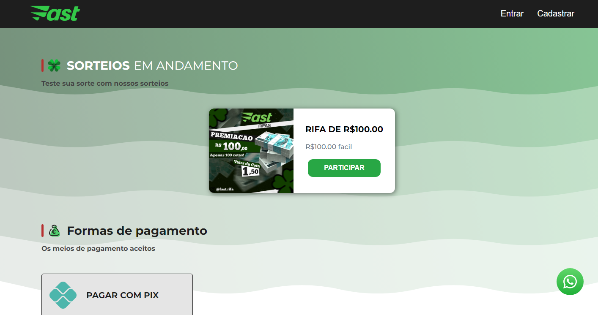
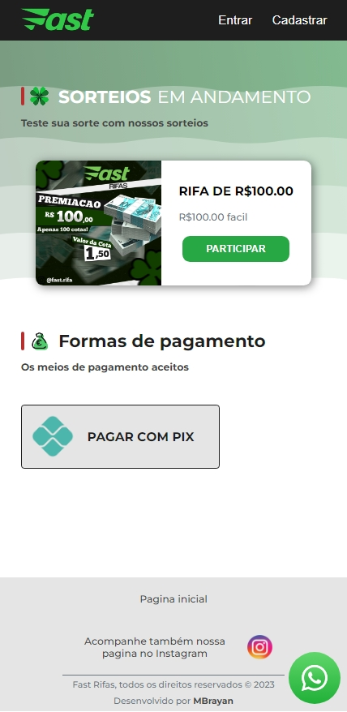
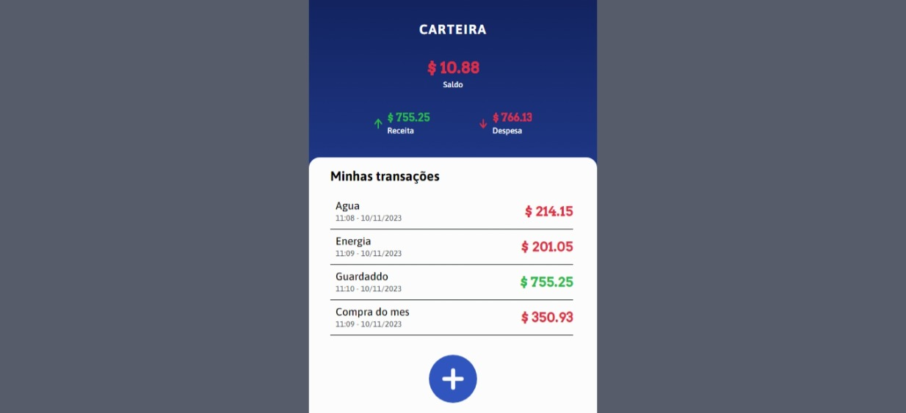
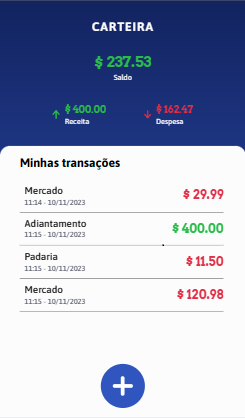

Olá, eu sou
Micael Brayan
um desenvolvedor frontend
Meus projetos
Fast Rifas
 O Fast Rifas é um site de sorteios onde você pode ganhar em dinheiro ou em prêmios. E para participar basta criar uma conta na pagina, escolher um sorteio de seu interesse, e comprar algumas rifas.
Este é um trabalho real que peguei como freelancer para construir todo do zero. Fui responsável pelo seu design e pela criação desde o frontend ao backend. E nele pude colocar à prova tudo que venho aprendendo na programação.
Sua infraestrutura conta com consumo de APIs de pagamento, API interna, banco de dados relacional com PostgresSQL, controle de acesso com JSON Web Token, padrão de projeto MVC, testes unitários e de integração com Jest.
Sendo o único desenvolvedor no projeto tive que usar algumas tecnicas de planejamento, de gestão de tempo e de recursos. Utilizando métodos como o Kanban para organizar tarefas, o Pomodoro para ritmo de trabalho, mapas mentais para visualizar o fluxo do sistema ou plataformas de gerenciamento como o Notion.
Até agora tem sido o meu maior projeto, e no que mais cresci como profissional. Estive diante de grandes desafios ao trabalhar nele, mas que com toda certeza ampliaram minhas habilidades como desenvolvedor, tanto as hard skills quanto as soft skills.
Organizando suas finanças
 O projeto Organizando suas finanças surgiu com a necessidade de registrar o uso do meu dinheiro em casa. Antes eu utilizava uma planilha no Excel para marcar e calcular meus gastos, mas tudo precisava ser organizado manualmente, além de ter um visual estranho.
Então, decidi criar uma aplicação que resolveria o meu problema e, de quebra, colocaria minhas habilidades de programação em prática.
Primeiro eu montei o design no Figma. Escolhi a paleta de cores, a fonte e comecei a desenhar o projeto, inspirando-me em aplicativos que eu já havia utilizado. Com o design eu consegui entender o que precisava ser feito e quais tecnologias eu usaria.
Nesta aplicação, utilizei HTML, SASS/CSS e JavaScript. E para manter as informações criadas na pagina utilizei o armazenamento local ( localStorage ), que salva os dados no cache do navegador. E utilizei o modelo CRUD para gerenciar os dados.
Foi um projeto que gostei muito de fazer, tanto pela experiência quanto por tê-lo utilizado para controlar meus gastos pessoais.
Habilidades
Estrutura
Estilização
Estilização
Linguagem de programação
Controle de versões
Testes automatizados
Design
Organização
IDE
Servidor web
Gerenciador de pacotes
Organização
Hospedagem
Interpretador de código
Hospedagem
Repositório
Banco de dados
Sobre mim
Sou um desenvolvedor frontend autodidata, com experiência em backend e apaixonado por aprender coisas novas. Amante de tecnologia, arte, matemática, e as maravilhas do universo observável.
Minha trajetória com códigos começou perto de 2015. Quando aprendi a desenvolver jogos por diversão. Ali descobri minha paixão e conheci alguns dos pilares da programação.
Atualmente atuo como freelancer. Buscando aprender as melhores práticas de desenvolvimento, tanto nas tecnologias em si, quanto em estratégias para melhorar e acelerar o fluxo de trabalho.
Tenho experiência com as tecnologias HTML, CSS, JavaScript, SASS, NodeJS, Express, consumo de APIs e testes com Jest. Além de controle de versão com Git e Git flow.
Estou sempre focado em escrever códigos escaláveis e pensando na experiência do usuário.